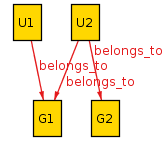

Sets and Relations¶
Sets¶
A set is a collection of unique, unordered elements. All Alloy expressions use sets of atoms and Relations. All elements of a set must have the same arity, but can otherwise freely mix types of elements.
Adding a signature automatically defines the set of all atoms in that signature. Given
sig Teacher {}
sig Student {
teacher: Teacher
}
Then the spec recognizes Student as the set of all atoms of type
Student, and likewise with the Teacher signature and the
teacher relationship.
Everything in Alloy is a set. If S1 is a Student atom, then
S1 is the set containing just S1 as an element.
There are also two special sets:
noneis just the empty set. Sayingno Setis the same as sayingSet = none. See Expressions.univis the set of all atoms in the model. In this example,univ = Student + Teacher.
Note
By default, the analyzer also generates a set of integers for each model, which will appear in univ. This can almost always be ignored in specifications (but see # below).
Set Operators¶
Set operators can be used to construct new sets from existing ones, for use in expressions and predicates.
S1 + S2is the set of all elements in eitherS1orS2(set union).S1 - S2is the set of all elements inS1but notS2(set difference).S1 & S2is the set of all elements in bothS1andS2(set intersection).
S1 = {A, B}
S2 = {B, C}
S1 + S2 = {A, B, C}
S1 - S2 = {A}
S1 & S2 = {B}
-> used as an operator¶
Given two sets, Set1 -> Set2 is the Cartesian product of the two:
the set of all relations that map any element of Set1 to any element
of Set2.
Set1 = {A, B}
Set2 = {X, Y, Z}
Set1 -> Set2 = {
A -> X, A -> Y, A -> Z,
B -> X, B -> Y, B -> Z
}
As with other operators, a standalone atom is the set
containing that atom. So we can write A -> (X + Y) to get
(A -> X + A -> Y).
Todo
it’s impossible to construct relations between sets, they’re always flattened
this is the only way to construct relations outside of signatures
Tip
univ -> univ is the set of all possible relations in your model.
Integers¶
Alloy has limited support for integers. To enforce bounded models, the
numerical range is finite. By default, Alloy uses models with 4-bit
signed integers: all integers between -8 and 7. If an arithmetic
operation would cause this to overflow, then the predicate is
automatically declared false. In the Evaluator, however, it will wrap the overflowed number.
Tip
The numerical range can be changed by placing a scope on Int. The number of the scope is the number of bits in the signed integers. For example, if the scope is 5 Int, the model will have all integers between -16 and 15.
All arithmetic operators are over the given model’s numeric range. To avoid conflict with set and relation operators, the arithmetic operators are written as Functions:
add[1, 2]
sub[1, 2]
mul[1, 2]
div[3, 2] -- integer divison, drop remainder
rem[1, 2] -- remainder
You can use receiver syntax for this, and write add[1, 2] as
1.add[2]. There are also the following comparison predicates:
1 =< 2
1 < 2
1 > 2
1 >= 2
1 != 2
1 = 2
As there are no corresponding symbols for elements to overload, these operators are written as infixes.
Warning
Sets of integers have non-intuitive properties and should be used with care.
#¶
#S is the number of elements in S.
Sets of numbers¶
For set operations, a set of numbers are treated as a set. For
arithmetic operations, however, a set of numbers is first summed before
applying the operator. This is equivalent to using the sum[]
function.
(1 + 2) >= 3 -- true
(1 + 2) <= 3 -- true
(1 + 2) = 3 -- false
(1 + 2).plus[0] = 3 -- true
(1 + 1).plus[0] = 2 -- false
Relations¶
Given the following spec
sig Group {}
sig User {
belongs_to: set Group
}
belongs_to describes a relation between User and Group.
Each individual relation consists of a pair of atoms, the first being
User, the second being Group. We write an individual relation
with ->. One possible model might have
belongs_to = {
U1 -> G1 +
U2 -> G1 +
U2 -> G2
}
Relations do not need to be 1-1: here two users map to G1 and one
user maps to both G1 and G2.
abstract sig Group {} abstract sig User { belongs_to: set Group } one sig U1, U2 extends User {} one sig G1, G2 extends Group {} fact { belongs_to = { U1 -> G1 + U2 -> G1 + U2 -> G2 } }
Relations in Alloy are first class objects, and can be manipulated and
used in expressions. [This assumes you already know the set operations].
For example, we can reverse a relation by adding ~ before it:
~belongs_to = {
G1 -> U1 +
G1 -> U2 +
G2 -> U2
}
The . Operator¶
The dot (.) operator is the most common relationship operator, and has
several different uses. The dot operator is left-binding: a.b.c is
parsed as (a.b).c, not a.(b.c).
Set.rel¶
Return every element that elements in Set map to, via rel. This also works for individual atoms.
U1.belongs_to = G1
(U1 + U2).belongs_to = {G1, G2}
Tip
In this case, we can find all groups in the relation with User.belongs_to. However, some relations may mix different types of atoms. In that case univ.~rel is the domain of rel and univ.rel is the range of rel.
For Multirelations, this will return the “tail” of the relation. Eg if rel = A -> B -> C, then A.rel = B -> C.
rel.Set¶
Writing rel.Set is equivalent to writing Set.~rel. See ~rel.
belongs_to.G1 = {U1, U2}
G1.~belongs_to = {U1, U2}
rel1.rel2¶
We can use the dot operator with two relations. It returns the inner product of the two relations. For example, given
rel1 = {A -> B, B -> A}
rel2 = {B -> C,
B -> D, A -> E}
rel1.rel2 = {
A -> C,
A -> D, B -> E}
In our case with Users and Groups, belongs_to.~belongs_to maps every
User to every other user that shares a group.
[]¶
rel[elem] is equivalent to writing elem.(rel). It has a lower
precedence than the . operator, which makes it useful for
Multirelations. If we have
sig Light {
state: Color -> Time
}
Then L.state[C] would be all of the times T where the light L was color C. The equivalent without [] would be C.(L.state).
iden¶
iden is the relationship mapping every element to itself. If we have
an element a in our model, then (a -> a) in iden.
An example of iden’s usefulness: if we want to say that rel doesn’t
have any cycles, we can say no iden & ^rel.
Additional Operators¶
Note
You cannot use ~, ^, or * with higher-arity relations.
~rel¶
As mentioned, ~rel is the reverse of rel.
^ and *¶
These are the transitive closure relationships. Take the following example:
sig Node {
edge: set Node
}
N.edge is the set of all nodes that N connects to.
N.edge.edge is the set of all nodes that an edge of N connects
to. N.edge.edge.edge is the set of all nodes that are an edge of an
edge of N, ad infinitum. If we want every node that is connected to N,
this is called the transitive closure and is written as N.^edge.
^ does not include the original atom unless it’s transitively
reachable! In the above example, N in N.^edge iff the graph has a
cycle containing N. If we want to also include N, use
N.*edge instead.
^ operates on the relationship, so ^edge is also itself a
relationship and can be manipulated like any other. We can write both
~^edge and ^~edge. It also works on arbitrary relationships.
U1.^(belongs_to.~belongs_to) is the set of people that share a group
with U1, or share a group with people who share a group with U1,
ad infinitum.
Warning
By itself *edge will include iden! *edge = ^edge + iden. For best results only use * immediately before joining the closure with another set.
Advanced Operators¶
<: and :>¶
<: is domain restriction. Set <: rel is all of the elements in
rel that start with an element in Set. :> is the range
restriction, and works similarly: rel :> Set is all the elements of
rel that end with an element in Set.
This is mostly useful for directly manipulating relations. For example,
given a set S, we can map every element to itself by doing
S <: iden.
++¶
rel1 ++ rel2 is the union of the two relations, with one exception: if any relations in rel1 that share a “key” with a relation in rel2 are dropped. Think of it like merging two dictionaries.
Formally speaking, we have
rel1 ++ rel2 = rel1 - (rel2.univ <: rel1) + rel2
Some examples of ++:
(A -> B + A -> C) ++ (A -> A) = (A -> A)
(A -> B + A -> C) ++ (A -> A + A -> C) = (A -> A + A -> C)
(A -> B + A -> C) ++ (C -> A) = (A -> B + A -> C + C -> A)
(A -> B + B -> C) ++ (A -> A) = (A -> A + B -> C)
It’s mostly useful for modeling Time.
Note
When using multirelations the two relations need the same arity, and it overrides based on only the first element in the relations.
Set Comprehensions¶
Set comprehensions are written as
{x: Set1 | expr[x]}
The expression evaluates to the set of all elements of Set1 where expr[x] is true. expr can be any expression and may be inline. Set comprehensions can be used anywhere a set or set expression is valid.
Set comprehensions can use multiple inputs.
{x: Set1, y: Set2, ... | expr[x,y]}
In this case this comprehension will return relations in Set1 -> Set2.